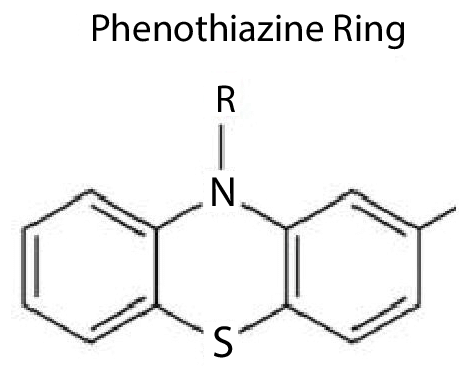

25 정신약물학의 태동
Birth of psychopharmacology
25.1 클로르프로마진의 등장
25.1.1 염료 공업과 페노티아진
현재의 화학공업은 석탄 부산물의 활용과 염료 합성의 필요성으로부터 비롯되었다고 해도 과언이 아니다. 석탄이 타고 남은 부산물인 콜타르1에는 다양한 유기 화합물이 포함되어 있었고, 이를 분리하던 화학자들은 값비싼 천연 염료를 대체할 수 있는 합성 염료의 합성 가능성을 엿보았다. 염료가 발색을 하고 또 쉽게 씻겨내려가지 않으려면 섬유에 잘 달라붙어야 한다. 화학 구조의 변경을 통해 결합 특성을 조작하던 화학자들은 수용체-리간드2의 개념에 도달할 수 있었고, 자연스레 근대 약물학이 태동하는 계기가 되었다. 개발된 염료 중 하나인 메틸렌블루는 세포핵을 염색할 수 있고 기생충을 죽이는 효과가 있기 때문에, 말라리아 치료제를 찾던 학자들에게 주목을 받았다. August Bernthsen (1855~1931)은 메틸렌블루의 구조가 기존의 벤젠 고리와는 다르다는 것을 밝혀내었고 이를 페노티아진 고리(phenothiazine ring)라고 명명하였다.(그림 25.1)
1 콜타르(coal tar): 석탄을 고온에서 가열하면 코크스(골탄, 骨炭)이나 석탄가스가 만들어지는데, 이때 발생되는 증기를 다시 농축한 것을 말한다. 1665년 발견되었으며, 1800년대부터는 피부질환의 치료제로 사용되었다. 1800년대 중반에 콜타르를 주성분으로 합성염료를 만들 수 있다는 것이 발견되면서 근대 화학공업이 급격히 성장하였다.
2 20세기 초 John Langley와 Paul Ehrlich는 약물 작용기전이 수용체를 통하여 일어난다는 이론을 내놓았다. 그전만해도 향정신성 약물이 신경세포 말단에 작용한다고 여겨졌는데, Langley는 근육세포나 신경세포에 니코틴이 결합하는 수용 물질이 있다고 주장하였다. 비슷한 시기에 Ehrlich는 서로 다른 약물이 독특한 효과를 나타내는 것은 서로 다른 수용체에 결합하기 때문이라고 하였다. 리간드는 수용체 뿐 아니라 다양한 생물학적 활성 물질에 달라붙어 결합체를 이루는 물질을 의미한다. 체내에 약물 수용체가 존재한다는 것은, 애초에 수용체에 결합하는 자연적으로 생성되는 물질(자연적 리간드)이 있음을 의미한다. 이러한 추론을 통해 약리학 이론이었던 수용체-리간드 이론은 신경전달물질, 호르몬을 비롯한 생체의 주요 신호전달체계를 이해하는 가장 중요한 이론이 되었다.[1]

25.1.2 클로르프로마진과 Laborit
기대와 달리 페노티아진 화합물은 말라리아에 별 효과가 없었다. 그러나 대신 진정 작용이 있다는 것이 알려졌고, 우연히도 외상으로 출혈이 심한 환자의 저혈성 쇼크를 막아준다는 사실이 발견되었다. 클로르프로마진의 합성은 1950년대 정신약물학의 혁명을 불러왔지만, 그 시작은 우연과 행운 그리고 한 의사의 창의적 발상으로부터 비롯되었다. Laborit3는 전투에서 부상당한 병사가 신속한 지혈과 수술 후에도 쇼크에 빠져 죽는 이유는, 신체적 허탈이 아니라 스트레스에 대한 과도한 반응 때문이라고 생각하였다.[2] 그는 페노티아진 화합물 중 하나인 프로메타진(promethazine)에 모르핀을 섞어서 투여하거나, 환자의 체온을 낮춤으로써 인공적인 동면상태를 유발하였고, 사망률을 상당히 낮출 수 있었다.[3]
3 Henri-Marie Laborit (1914~1995): 프랑스의 외과의사 겸 신경학자. 해군군의관으로 근무하면서, 심한 부상을 당한 군인들의 치사율을 낮추는 마취보조제를 개발하고 있었다. 애초에 그가 먼저 Paul Charpentier에게 항히스타민을 변형하여 중추신경계를 안정시키는 약물을 개발하는 아이디어를 제안하였고. Charpentier는 이 과정 중 클로르프로마진 합성에 성공한다. 이렇게 클로르프로마진 개발에 주도적인 역할을 했으나, 정신과 의사가 아니었던 탓에 Deniker와 Delay에 비해 공로를 충분히 인정받지 못하였다. 그의 말년에 이르러서야 업적의 재평가와 복권이 이루어졌다.
한편 클로르프로마진(chlorpromazine)은 1951년 프랑스의 제약회사인 롱프랑(Rhone Poulenc, 현재의 사노피-아벤티스 제약)의 연구실에서 항히스타민제를 개발하던 Paul Charpentier에 의해 합성되었다. 당시 롱프랑 실험실을 이끌고 있던 Simone Courvoisier는 클로르프로마진을 투여 받은 쥐의 행동변화를 관찰하였고, 쥐들이 조건반사로 학습된 신호를 무시하는 경향을 보인다는 것을 발견하였다.(29.2.2 장) 클로르프로마진의 시제품은 즉시 Laborit에게 연구용으로 보내졌고, 그는 인공동면(artificial hibernation)을 유도하는 자신의 처방(소위 Laborit cocktail)에 포함시켰다.(32.1 장) 클로르프로마진을 투여받은 환자는 완전히 진정 상태에는 이르지 않아 수술 중에도 의식을 잃지 않고 간단한 명령을 수행할 수 있었으며, 차분하고 통증에 둔감한 모습을 보였다.
당시는 흥분한 조현병 환자에게 찬물을 뿌려 진정시키곤 했던 시절이라, Laborit은 환자의 “열을 식히기 위해” 동료 군의관들에게 클로르프로마진을 소개했고 1952년 1월 최초로 Jacques Lh라고 기록된 정신증 환자에게 시도되었다. 20일 동안의 반복 투여 후 Jacques Lh는 거의 완전히 회복되어 퇴원할 수 있었고, 이 놀랄만한 소식은 즉각 학계에 전파되었다.
25.1.3 Delay와 Deniker
한편 이 소식을 전해들은 성 안나 병원의 Delay4와 Deniker5는 즉각 1952년 3월 임상 시험을 시작하였다. 초기에는 약물의 효과를 향상시키기 위해 Laborit의 방식을 좆아 얼음 팩을 사용했으나, 여러 가지 이유로 저체온 상태를 유지할 수 없었을 때에도 환자들은 침착한 상태로 유도되었다. Deniker와 동료들은 얼음이 불필요하다고 판단하였고, 약물의 효과가 저체온 유도 때문이 아니라는 것을 간파하였다.
4 Jean Delay (1907~1987): 프랑스의 정신과 의사. 성 안나 병원의 정신과 의사로서 동료인 Pierre Deniker와 함께 최초의 클로르프로마진 임상 연구를 수행한다. 이 업적으로 프랑스 정신과 학계의 총아로 떠올랐으나, 60년대 말 정신질환의 강제적 약물치료에 반대하는 68혁명 시위대가 그의 연구실을 습격한 이후 은퇴하여 작가로 여생을 보냈다.
5 Pierre Deniker (1917~1998): 프랑스의 정신과 의사. Delay의 제자로 일하면서 클로르프로마진의 효과를 입증해내었다. 클로르프로마진을 미국 학계에 알리는데 공헌하였으며, 나중에는 약물의 행동적 부작용에 관심을 두어, 항정신병 약물의 고용량 사용을 반대하는데 앞장서기도 하였다.[4]
그들은 이 발견에 너무나 고무된 나머지 불과 두 달 후인 5월 임상 성과를 학회에 발표하였고, 1952년 11월 롱프랑은 Largactil®이라는 상품명으로 출시하였다. 불과 2-3년 내에 클로르프로마진은 전 세계로 퍼져나갔고, 그 어떤 곳에서도 효과는 거듭 재확인 되었다. 미국에서는 스미스-클라인 제약이 클로르프로마진의 권리를 사들여 Thorazine®이라는 상품명으로 판매하였고, 1954년에 항정신병 약물로 허가를 받았다. 1950년대 말 미국 재향군인 보건국 연구진(US Veterans Administration Collaborative Study Group)에 의해 최초로 무작위 임상 연구가 행해졌으며, 클로르프로마진의 우수성이 공식적으로 확인되었다.[5]
정신증 치료 분야만이 아니더라도, 약물의 합성에 성공한지 불과 1년 동안에 예기치 않은 효과를 발견하고, 임상 시험을 완성시키며, 단 기간내에 전세계적으로 센세이션을 불러 일으킨 사례는 극히 드물 것이다. 더군다나 전기경련치료 외에는 뾰족한 치료법도 내놓지 못했고, 정신분석의 그늘 아래 점점 뒷전으로 밀리던 생물정신의학은 이후로 놀라운 발전을 일구어낼 토대를 다질 수 있었다. 또한 조현병이 무의식에 침범당해서 생긴다거나, 왜곡된 가족이나 억압된 사회구조 때문에 생긴다는 당시 인기를 끌던 이론이 점차 쇠퇴하고, 조현병 역시 다른 질병들과 마찬가지로 의학적 질환의 하나일 뿐이라는 개념이 뿌리를 내리기 시작하였다.
25.2 리서핀과 추체외로 증상
라우볼피아 서펜티나(Rauvolfia serpentina)는 인도를 비롯한 동남아시아에 자생하는 식물로 뿌리 모양이 뱀과 유사하여 우리나라에서는 인도사목(印度蛇木)이라고도 불린다. 라우볼피아는 안정 효과가 있기 때문에 수세기 동안 광증 치료에 사용되어 왔으며, 이외에도 해독이나 해열 등에 민간요법으로 사용되어 왔다. 라우볼피아에서 약효의 주성분인 리서핀(reserpine)이 최초로 분리된 것은 1952년이었다.
정신의학적인 측면에서 리서핀의 효과에 대한 첫번째 논문은 Kline6에 의해 1954년에 출판되었다.[6] 당시 클로르프로마진의 성공에 고무되어있던 정신의학자들은 유사한 화합물을 찾는데 열정적이었고, 혈압 강하 및 강한 진정 작용이 있는 것으로 알려졌던 리서핀은 고혈압 및 조현병 환자에게 활발하게 사용되기 시작하였다.[4]
6 Nathan Kline (1916~1983): 미국의 정신과 의사. 리서핀을 조현병 환자에게 투여하는 최초의 임상 시험을 시행하였다. 그는 이후 항우울제 연구로 관심을 돌려, 결핵약인 iproniazid가 항우울 효과가 있음을 입증하였고, 이는 단가아민 산화효소 억제제(monoamine oxidase inhibitor)라는 새로운 항우울제 개념의 시발점이 되었다.
그러나 리서핀에 대한 기대는 그리 오래가지 못하였다. 약물을 사용하던 환자의 상당수에서 심한 우울 반응이 일어났고, 그 외에도 무정동이나 안절부절함 등의 부작용이 드물지 않게 보고되었다.[7] 이처럼 리서핀은 역사에서 잊혀진 약이 되었으나, 대신 우울증의 단가아민 이론7이 탄생하는데 중요한 단서가 되었다. 리서핀, 세로토닌 그리고 lysergic acid diethylamide (LSD) 사이의 구조적 유사성을 연구하던 Brodie8는 리서핀이 세로토닌을 고갈시킨다는 것을 발견하였다.[11] Arvid Carlsson은 이 연구를 확장하여, 세로토닌 뿐만 아니라 도파민, 노르에피네프린까지 감소시킨다는 것을 발견하으며, 동시에 리서핀으로 유도된 부동증이 L-dopa를 주입함으로써 해소됨을 보고하였다.(33.1.2 장) 이는 파킨슨 병의 기본 병리를 이해하는 가장 중요한 단서가 되었다.[12]
7 우울증의 단가아민 이론(monoamine theory of depression or catecholamine depletion theory of depression): 1965년 하버드대 교수였던 Joseph J. Schildkraut는 중추신경계의 단가아민(catecholamine, 대표적으로는 노르에프린과 세로토닌)이 부족하면 우울증이 발생하고, 항우울제를 이용하여 이를 교정하면 우울증을 치료할 수 있다는 이론을 내놓는다.[8] 이를 지지하는 증거도 많은 편이지만, 실제 우울증이나 항우울제 효과를 설명하기에는 허점이 너무나 많다.[9] 그러나 단순명료함때문인지, 현재까지도 제약회사의 선전이나 일반인을 대상으로 한 강연에서 항상 우울증의 발병 원인으로 거론되어왔다. 마치 Hippocrates가 우울증의 원인으로 지목한 검은 담즙(black bile)이 현대에 들어와서 catecholamine으로 대체된 것과 같다.[10]
8 Bernard Brodie (1907~1989): 영국출신으로 미국에서 활약한 약리학자. 현대 약물학의 창시자라고 여겨진다. 미국 국립보건원의 약물학 실험실을 설립하였다. 세로토닌과 노르에피네프린이 뇌 기능에서 차지하는 역할에 대한 업적을 남겼다.)
점차 리서핀을 복용한 환자들이 나타내었던 무정동, 무의욕증이 우울증이라기보다는 단가아민의 고갈에 의한 파킨슨 유사 증상이라는 의견이 부상하였다. 더불어 리서핀 복용 환자들이 보였던 또 다른 현상인 불안과 안절부절함이 역시 도파민과 관련된 부작용이라는 견해가 지지를 받으면서, 단가아민을 차단하는 항정신병 약물의 공통적인 부작용인 추체외로 증후군 개념이 정립되기 시작하였다.[13] 우연이었는지 필연이었는지, 1950년대와 60년대 초반은 새롭고도 경이로운 발견이 연속되었으며, 불과 10여년 사이에 조현병과 우울증의 기본 병태 생리, 향정신성 의약품의 작용 기전, 부작용과 그의 해소법 등이 연달아 밝혀졌다. 리서핀은 비록 1954년부터 1957년까지 짧은 인기를 얻은 후, 실제 임상에서는 거의 사용되지 않는 약이 되어버렸지만, 뼈아픈 실패에서 소중한 결과를 얻은 예라 할 수 있다. 이로 말미암아 정신약물학은 화려하게 부활하였으며, 이후 반세기에 걸쳐 눈부신 성장을 할 수 있게 되었다.[14]
25.3 할로페리돌과 기타 약물들
25.3.1 신경전달물질
클로르프로마진의 성공에 힘입어 신경전달물질의 역할에 대해 새롭게 관심이 부여되었다. 1933년 Dale 9에 의하여 최초로 아세틸콜린이 말단 신경세포에서 신경전달물질 역할을 한다는 것이 확인되었다.[15] 그러나 당시만 해도 중추신경계 내에서의 신호전달에서는 화학물질보다는 전기신호의 비중이 더 큰 것으로 여겨지고 있었다. 다양한 단가아민 들이 중추신경계에 분포한다는 것은 1950년대가 지나서야 밝혀졌고, 이들이 신경전달물질 역할을 한다는 것은 1958년 Carlsson이 이끄는 스웨덴 룬드 대학 연구진이 행한 일련의 기념비적 실험 들에 의해서였다.(33.1.2 장)[15] Carlsson과 동료 Lindqvist는 클로르프로마진 및 할로페리돌의 작용 기전은 시냅스 후 단가아민 수용체 차단 및 이로 인한 시냅스 전 단가아민 활성의 증가임을 발견하였다.[16] 이에 근거하여 조현병은 도파민의 비정상적인 과활성에 의한 것이라는 가설이 세워질 수 있었다.[17]
9 Henry Hallett Dale (1875~1968): 영국의 약리학자. 신경세포를 통한 화학적 신호전달에서 아세틸콜린이 차지하는 역할에 대한 연구로 1936년 노벨 생리학상을 수상하였다.
25.3.2 폴 얀센
정신약물학의 발자취를 따라갈 때, 폴 얀센10이라는 걸출한 인물의 행적을 지나칠 수 없다. 제약회사 얀센 사의 시작은 1933년으로 거슬러 오른다. 타 제약회사의 판매 대리점으로 시작했던 얀센 사는 2차 대전을 겪으면 급성장하였고, 파라세타몰(타이레놀) 개발에 성공함으로써 본 궤도에 오른다. 창업주의 아들이었던 얀센은 이미 청년 시절에 파라세타몰 및 마약성 진통제 합성에 성공하여 개발자로서의 명성을 높이고 있었다. 가족의 제약 사업을 확장시키던 방도를 찾던 얀센은 다양한 화합물의 구조를 체계적으로 변경하고, 동물 실험을 통해 효과가 있어 보이는 후보 물질을 선택하는 프로세스를 고안하였다. 얀센이 관심을 두었던 동물 모델은 암페타민으로 유도된 상동 행동(amphetamine induced stereotypy) 모델이었다.(29.2.3 장) 얀센은 경마장에서 암페타민을 복용한 기수가 종종 결승점을 지나고도 멈추지 않아 주위 사람들이 강제로 멈춰야 하는 점에 주목하였다. 그는 이러한 현상이 편집성 조현병과 유사하다는 일부 임상가의 지적을 알고 있었다. 얀센은 암페타민을 복용한 쥐가 보이는 반복적인 동작을 강박적(Zwangsnagen)이라 표현하였고 이를 차단하는 효과를 통해 항정신병 약물을 선별할 수 있을 것이라 믿었다.[18]
10 Paul Janssen (1926-2003): 벨기에 출신의 정신의학자. 소규모 가족 회사이던 얀센 사를 다국적 대기업으로 키워낸 인물자로서, 그의 생전에 할로페리돈, 리스페리돈을 비롯한 80개가 넘는 신약을 개발하였다.
25.3.3 할로페리돌
얀센이 이끄는 연구진의 원래 목표는 항정신병 약물이 아니라 강력한 진통제의 개발이었다. 이를 위해 메페리딘(페치딘 혹은 데메롤)의 지방산 체인을 점점 늘리는 변형을 시도하였다. 기존 화합물의 변형과 동물 실험, 선택된 화합물의 재변형이라는 프로세스를 통해 1957년 butyrophenone R1187이라 명명된 화합물이 만들어졌다. 동물 실험 결과 아편 유사 특성 외에도 암페타민 유발 상동 행동을 막는 작용과 함께, 진정 작용, 강직증 같은 클로르프로마진과 유사한 효과가 있음이 밝혀졌다. 연구진을 목표를 바꿔 항정신병 효능을 최대화시킨 R1187 유도체 개발에 착수하였고, 1958년 2월에 R1625가 합성되었다. 이 화합물은 R 1187에 두 개의 할로겐 치환이 있었기 때문에 할로페리돌(haloperidol)이라고 불리워졌다.[19]
할로페리돌은 butyrophenone 계의 약물로서 다른 메페리딘 유도 물질이 실험 쥐를 흥분시킨 반면, 이 약은 안정을 찾게 만들었다. 합성에 성공한지 미처 두달도 안 되어 실제 조현병 환자에게 투여되었으며, 벨기에 리에주 대학의 Jean Bobon과 Paul Divry의 주도 하에 첫번째 임상 시험이 진행되었다. 그들은 임상 시험 결과를 발표하면서 약물이 수면을 유도하지 않으면서도 환자를 진정시켰고, 망상과 환각을 가라앉혀 정신치료적 면담이 불가능했던 상태에서 가능한 상태로 만들어주었다고 소개하였다.[20]
클로르프로마진을 통해 학계의 총아로 올라선 Delay와 Deniker 역시 초창기부터 할로페리돌에 깊은 관심을 나타내었다. 그들은 급성 환자의 진정 뿐만 아니라 만성 환자의 환각과 망상을 없애는 데도 탁월한 효과를 나타낸다고 하였으며, 신경독성을 일으키는 용량보다 훨씬 더 적은 용량에서도 항정신병 효과를 나타낸다는 의견을 내었다. 이전에 동물 모델을 연구하던 학자들이 강직증(catalepsy)을 일으킬 수 있을 정도의 용량을 써야 항정신병 효과를 발휘한다고 판단했던 것을 고려해보았을 때, 새로운 약물의 도입이 점점 더 학자들의 시야를 넓혀주고 이해의 폭을 깊게 했다는 것을 엿볼 수 있다.
25.3.4 의학 윤리와 허가 제도
클로르프로마진과 할로페리돌 개발의 뒷 배경을 살펴보면, 지금으로서는 납득되지 않을 정도로 합성과 임상 시험, 상품화가 신속히 이루어졌다는 것을 알 수 있다. 상당한 빈도로 추체외로 증후군이 나타났을 터인데도, 초기 임상 발표들에는 그런 내용이 생략되어 있다. 이는 당시만 해도 연구 윤리에 대한 개념이 없었고, 임상의약품 허가 체계도 갖춰지지 않았다는 것을 감안하여 이해해야 한다. 당시만 해도 연구참여자의 동의를 구하는 일도 없었고, 부작용에 대한 피해보상책도 없었다. 클로르프로마진은 개발된 지 불과 3년 후인 1955년 미국에서 사용 허가를 받았다. 반면 할로페리돌은 1960년대 초 이미 유럽에서 활발하게 사용되기 시작하였는 데 비해, 미국에서는 1969년에야 비로서 사용 허가를 받게 된다.
이 차이는 다름 아닌 탈리도마이드(thalidomide) 사건 때문이었다. 안정제로서 유럽에서는 의사 처방없이도 자유롭게 구매할 수 있었던 탈리도마이드가 심각한 기형아 출산을 유발한다는 사실이 드러난 것이 1960년대 초 였다. 간발의 차이로 약물의 시장 진입을 저지한 미국 정부와 여론은 동일한 비극이 반복되지 않게 하기 위해 강력한 규제 조치를 요구했고, 1962년 케네디 대통령의 지시 하에 철저한 허가용 임상 시험과 규제에 대한 법령이 제정되었다. 할로페리돌은 이러한 절차를 거친 후에야 미국 시장에 도입될 수 있었다.[19] 이후 정신과 약물 뿐만 아니라 모든 신약들은 철저한 임상 시험을 통해 효과와 안전성에 대한 확고한 자료가 얻어져야 허가받을 수 있게 되었다.
항정신병 효과를 선별하는 다양한 동물 모델이 개발되면서, 클로르프로마진과 유사한 약물을 찾는 작업이 지속적으로 이루어졌다. 1960년대 초에 개발 중이던 페노티아진 계열 약물의 수는 20개를 넘어섰으며, 1990년대까지 그 수는 배 이상 늘어났다. 이들 약물은 유럽을 중심으로 활발하게 사용되었으나, 우리에게 생소한 것은 까다로운 미국의 임상 허가 제도 때문이었다. 모든 페노티아진이 클로르프로마진의 복제품인 것만은 아니었다. 각각 필요 용량과 부작용 측면에서 큰 차이를 보였다. 예를 들어, 진정 효과는 클로르프로마진과 같은 aminoalkyl 에서 더 문제가 되었으며, 추체외로 증상은 prochlorperazine과 같은 piperazinylalkyl에서 문제가 되었다. 치오리다진(thioridazine)과 같은 piperidylalkyl은 심한 항콜린효과를 나타내기도 하였다. 그에 비해 다양한 페노티아진 계열 약물이 도입되었음에도 불구하고, 화학구조의 차이가 효능의 차이로 이어지리라는 기대는 이루어지지 않았다. 부작용이 다를 뿐 효능은 대체로 비슷했으며, 이는 클로자핀이 도입되기 전까지는 상황이 달라지지 않았다.[14]
25.4 항정신병 약물 개념의 변화
클로르프로마진 이전의 약물 치료가 단순히 흥분의 진정이라는 목적을 지니고 있었다면, 클로르프로마진은 처음으로 이를 넘어서 조현병 자체를 치료할 수 있을 지 모른다는 가능성을 보여주었다. 그 전까지 사용되던 메프로바메이트나 바비튜레이트와 같은 마이너 진정제(minor tranquilizer)들은 분명 불안을 감소시키고 수면을 유도하는 효과가 있으나, 조현병 환자의 공격성, 초조, 폭력 및 불안을 억제하는데는 역부족이었다. 따라서 조현병이 단순한 진정으로는 치료되지 않는다는 점이 분명해졌다. 이는 정신증과 신경증을 확연히 구분짓지 않는 정신분석적 접근방식에 대한 도전이기도 하였다. 무의식적 억압과 그 왜곡된 표현이라는 획일적 패러다임으로는 정신증의 고유한 약물 반응을 설명하기 어려웠다. 그러나 메이저 진정제(major tranquilizer)라는 용어 자체에서 풍겨나듯이, 정신증을 병적 흥분과 연결시키는 서사는 인지 장애와 무감동으로 특징지워지는 음성 증상을 간과하게 하는 결과를 초래하였다. 클로르프로마진에 의해 안정되는 망상, 환각, 흥분, 초조 등의 증상이 조현병 증상의 전부인 것처럼 여겨지기 시작하였고, 조현병 치료는 신경계의 과흥분을 억제하는 것으로 개념화되었다. 이 와중에, 크레펠린과 블로일러가 묘사했던 인지손상이나 무의욕, Rado와 Meehl 등이 개념화한 무쾌감증(anhedonia) 같은 핵심 개념들이 조현병을 둘러싼 논의에서 소외되고 말았다.[21]
한편 항정신병 약물이 조현병 치료에 있어서 어떤 위치를 차지하는 지를 이해하려는 노력이 계속되었다. Delay와 Deniker는 클로르프로마진의 진정 효과와 주위에 무신경 해지게 만드는 효과에 주목하여 1955년 이들 약물을 신경이완제(neuroleptic)이라고 부르기 시작하였다.[22] 의사들의 경험이 쌓이면서 약물이 일으키는 파킨슨 유사 증상에 주목하게 되었고, 유럽의 의사들은 충분한 항정신병 효과를 나타내기 위해선 어느 정도의 파킨슨 유사 증상이 필요하다고 믿기 시작하였다. 신경이완제라는 용어는 이 즈음부터 정신 증상을 신경 증후군으로 대체하는 약물 정도로 여겨지기 시작하였다.[23] 동시에 이들 약물이 “조현병”을 근본적으로 치료하는 것은 아니며, 동일한 흥분, 과격함을 보이는 상태라면 꼭 조현병이 아니라도 광범위한 정신증에 효과를 보일 것이라 이해하였다.
유럽 의사들의 보수적인 견해와는 대조적으로 미국의 정신과 의사들은 약물이 조현병의 근본적 병태생리를 바로잡는다고 여기길 원했다. 급성기 효과는 증상을 가라앉히는 데 그칠지 몰라도, 장기간 복용하면 점점 더 근본적인 완치에 다가갈 것이라고 믿었다. 캐나다의 정신과 의사인 Lehmann11은 이러한 희망을 담아 클로르프로마진 계열의 약물들을 항정신병 약물(antipsychotic drug)이라 칭하기 시작하였다. 그는 물론 당대에 개발된 약물로는 아직 “완치”의 목표와 거리가 멀지만, 멀지 않은 장래에 조현병만을 치료하는 약물이 개발되리라 믿었다. 1960년대가 되자 더 이상 항정신병 약물에 “진정제”라는 명칭은 쓰지 말자는 견해가 힘을 얻었다.[22]
11 Heinz Lehmann (1911~1999): 독일 출신의 캐나다 정신과 의사. 유럽에서 사용되던 클로르프로마진을 캐나다와 미국에 적극 전파시킨 인물로, 북미 정신약물학의 아버지라 불리운다. 시대를 앞서가 psilocybin을 불안 치료에 적용해보고자 하였다.
클로르프로마진을 비롯한 약물이 단순히 양성 증상만을 억제하는 지, 아니면 근원적인 치료 효과를 일구어 내어 완치에 이르게 하는지는 아직도 규명되지 못한 과제이다. 현대에는 개념들이 더욱 혼란스럽게 뒤섞여서, 항정신병 약물이 양극성 장애나 주요 우울증에 효과적으로 사용되며, 역으로 타 질환 치료제가 조현병에 사용되기도 한다. 심지어 조현병과 기타 주요 정신질환이 분명히 구분되는지도 의문에 싸여있다. 또한 완치의 기준조차 여전히 마련되지 않고 있기 때문에 이들 약물이 진정 치료제라 할 수 있는지는 더욱 지켜봐야 할 것 같다.
약물을 오랜동안 꾸준히 복용하면 점점 더 완치에 다가가리라는 희망과는 별개로, 재발을 막기 위해서라도 항정신병 약물을 장기 요법이 필연적인 듯이 보였다. 약물로 급성기 증상을 가라앉힌다 해도, 사용을 중단하면 어느 새 증상이 돌아오는 것이 확실해보였다. 이로부터 재발 방지(relapse prevention)라는 개념이 등장하였다. 1970년대 초가 되자 항정신병 약물의 급성기 효과뿐 아니라, 유지 치료의 효과에 대한 무직위 임상 시험이 이루어지기 시작하였다.[24] 1975년에는 이미 이들 연구의 성과를 종합한 메타 분석 결과가 발표되었고, 의문의 여지 없이 재발을 막기 위해선 유지 치료를 기약없이 행해야 한다는 것이 분명해졌다.[25]
25.5 부작용과 약물의 위험성
1957년 스위스에서 열린 2차 국제 정신약물학 학회에서 F.A. Freyhan은 클로르프로마진의 효과는 추체외로 증후군의 발생과 따로 떼어 생각할 수 없다고 못 박았다. 조현병에서 보이는 뇌의 과활동과 파킨슨 환자의 무동증은 연속선상에 놓여있기 때문에, 어느 한가지를 조절하려면 다른 쪽을 희생시킬 수 밖에 없다는 견해였다. 가시적인 효과를 보려면 추체외로 증후군이 발생할 정도의 충분한 용량을 사용해야만 한다거나, 추체외로 증후군은 치료 효과의 일부분이라는 주장도 드물지 않았다. 이런 개념을 신경이완제 역치 이론(neuroleptic threshold)이라고도 한다.[26]
이보다 전에 클로르프로마진이 추체외로 증후군을 일으킨다는 것은 1954년 Hans Steck과 Hans Joachim Hasse에 의해 독립적으로 보고되었다.(52.1.1 장) 파킨슨 병과 구분이 힘든 무정동, 무동증, 의욕 저하, 근긴장을 비롯하여 좌불안석 역시 함께 보고되었다. 앞서 언급했듯이 초기에는 이러한 효과가 부작용으로 간주되지 않았으나, 1964년 미국 국립보건원 후원으로 진행된 대규모 연구에서 각기 다른 약물들은 나타내는 부작용 정도나 특성이 서로 다르면서도 동등한 치료 효과를 나타낸다는 것이 확인되었다.[27] 이 연구를 통해 추체외로 증후군은 치료에 불필요한 부작용이라고 여겨지기 시작하였고, 동등한 효과를 내면서도 부작용 없이 안전한 약물이 개발될 수 있다는 가능성이 비쳐졌다.
그러나 미래에 대한 희망과는 별개로 추체외로 증후군은 환자들에게는 말할 수 없는 고통을 안겨주었다. 1961년 보고서에서 항정신병 약물로 치료받은 환자의 추체외로 증후군의 유병률은 38.9%로 추산되었다.[28] 이러한 상황은 할로페리돌 도입 후에는 더욱 심화되었다. 더군다나 1950-70년대의 의료 현장에서는 난치성 환자에게서 약물 효과의 한계를 극복하기 위해, 심혈관계만 버텨준다면 플루페나진 혹은 할로페리돌은 수십 mg부터 수백 mg까지 투여하는 초고용량 치료가 시도되기도 하였다.[29,30]
이렇게 무모한 시도가 행해졌던 것은, 추체외로 증후군을 치료를 위한 댓가 정도로 대수롭지 않게 생각했던 때문이기도 하지만, 대부분의 의사들이 이러한 부작용이 가역적일 것이라고 믿었던 탓이 크다. 불수의적이고 지속되는 비정상적 운동 부작용은 이미 1957년 Schonecker에 의해 보고되었으며, 1964년 Faurbye는 이를 지연 운동 이상증(tardive dyskinesia)라고 이름붙였다.[31] 지연 운동 이상증은 약물을 끊어도 지속될 뿐 아니라 오히려 악화되기까지 했기 때문에, 비가역적일 것이라는 우려가 높아졌다. 1960년대부터 70년대에 걸쳐 지연 운동 이상증 및 항정신병 약물 악성증후군(neuroleptic malignant syndrome)의 보고가 증가하고, 더군다나 고용량 투여 시 치명적 부정맥인 torsade des pointe가 증례가 발견되면서, 항정신병 약물의 안전 신화는 종지부를 찍었다. 또한 만성 조현병 환자가 보이는 소위 음성증상의 적지 않은 사례가 추체외로 증후군에 의한 이차성 음성 증상임이 판명되었다. 고용량 투여의 효과에 대해서도, 환자마다 용량-혈중 농도 관계에 차이가 있긴 하지만, 약물의 혈중 농도가 일정 수준에 도달되면, 더 높은 용량은 별반 이점이 없다는 설명이 확고히 자리잡았다.[32]
25.6 1세대 항정신병 약물 도입이 가져온 영향
클로르프로마진이 신속이 임상에 도입되었던 것은 그만큼 절실한 수요가 있었다는 뜻이다. 그러나 앞서 보았듯이 예기치 않은 부작용이나 임상 허가 제도의 부재, 그리고 제약사들의 과열된 경쟁 등의 요인이 합쳐져, 의도하지 않았음에도 불구하고 부정적인 결과가 초래되었고 피해자들이 생겨났다. 전전두엽 절제술 같이 위험 대비 이득이 높지 않은 치료를 행하는 실수를 저지르지 않기 위해, 약물이 광범위하게 보급된 후에야 지연 운동 이상증과 같은 부작용을 발견하는 일을 예방하기 위해, 치료 효과와 부작용을 객관적으로 평가하는 평가 도구가 개발되었다. 또한 무작위 배정, 이중 맹검 시험 및 임상 시험의 표준 절차와, 얻어진 결과를 객관적으로 분석하는 통계적 방법론들이 함께 발전하였다. 이런 방법들은 항정신병 약물 뿐 아니라 이후 항우울제 개발 및 심리 치료에 대한 평가에 까지 적용되었다.
항정신병 약물의 개발이 가져온 또 하나의 극적인 변화는 탈시설화의 물결이었다. 1960년대 냉전시대의 억압적 체제와 베트남 전쟁에 반대하는 와중에 태어난 반체제 운동은 정신질환자의 인권문제를 되돌아보게 하였다. 그러나 항정신병 약물이 없었던 들 결코 수용소에 갇혀 있던 환자들이 자유로운 공기를 마실 수는 없었을 것이다. 대형 수용소가 점차 폐쇄되고 환자들이 지역 사회로 복귀하면서 지역사회 정신의학이 강조되었다. 무조건적인 격리나 급성 증상 치료라는 목표에서, 재발-재입원의 방지가 더 큰 과제로 자리잡았다.
위와 같은 의학 외적 변화와 더불어 클로르프로마진이 가져온 커다란 영향 중 하나는 신경과학의 눈부신 발전일 것이다. 항정신병 약물의 효과를 이해하려는 노력을 통해 신경전달물질과 이들 수용체의 기초적인 지식이 확립되었다. 특히 도파민, 세로토닌 시스템이 뇌의 주요 신경전달물질이며, 다양한 정신질환과 밀접한 연관을 맺고 있다는 발견은 이후 항우울제 개발에 지대한 역할을 했을 뿐더러, 현재까지도 정신약물학 발전의 토대를 이루고 있다.
조현병의 도파민 가설은 1966년 Van Rossum이 처음 제안하였다. 그는 원래 암페타민과 같이 도파민 활성을 자극하는 약물이 환각을 유발하며, 항정신병 약물이 파킨슨 병과 유사한 운동장애를 나타내는 것을 토대로 이 가설을 세웠다. 한편 이 가설을 결정적으로 뒷받침하는 증거는 1976년에 발표되었다. Philip Seeman 등은 각종 항정신병 약물이, 방사성 동위원소를 붙인 할로페리돌([3H]-haloperidol) 혹은 도파민([3H]-dopamine)을 수용체에서 분리시키는 정도를 측정함으로써, 항정신병 약물의 수용체 친화도(receptor affinity)를 측정하는 길을 열었다. 이렇게 측정된 친화도는 항정신병 약물 각각의 유효 용량과 양의 상관관계를 맺고 있었다.[33] 이로써 Van Rossum의 가설, 즉, 항정신병 약물이 효과를 나타내는 것은 도파민 수용체 차단 효과에 기인하며, 동시에 조현병은 도파민 과다 분비 혹은 수용체 과활성 때문이라는 이론이 증명되었다.(33.1.2 장)
물론 도파민 수용체 차단이 항정신병 약물의 작용 기전임은 이로써 분명해졌지만, 도파민 과활성이 조현병의 핵심 병태생리인지는 의문의 여지가 있으며, 이후 가열찬 논쟁의 도화선이 되었다. 그러나 정신약물학 및 신경과학의 발전에 있어서 도파민 가설이 가져왔던 혁신과 흥분은 쉽게 찾아보기 힘든 사례였다.